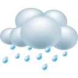
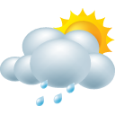
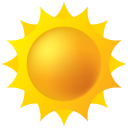

서울시 정책이 잘 실현되고 있는지 정기적으로 원순씨에게 꼭 알려주세요. ^^
- 매끄럽지 않습니다.
-
 국공립어린이집 1,000개소 추가확충 사업
국공립어린이집 1,000개소 추가확충 사업4년동안 국공립 어린이집을 1000개
-
개포 모바일 융합클러스터 조성사업
개포외국인고등학교를 IT startup의 허브로 만들어내는 사업
- 비옴
-

서울신시장 100 project
기존의 전통시장을 혁신하는 사업으로 매대, 아케이드, 메뉴, 위생 등의 혁신을 통해 사람들이 찾는 전통시장을 100개 만듬
-
어린이 청소년 문화예술교육 확대를 위한 김포가압장 문화예술교육공간 사업
많은 청소년, 어린이들이 문화예술교육을 받을 수 있는 공간 확보 및 다양한 콘텐츠 생산 사업
- 흐림
-
 베이비부머의 제2인생설계를 위해 구별 인생이모작센터 설치 및 50+캠퍼스 설치 사업
베이비부머의 제2인생설계를 위해 구별 인생이모작센터 설치 및 50+캠퍼스 설치 사업시기적으로 베이비부머가 매년 은퇴를 하고 있음. 기존 어르신과는 달리 경제력과 전문성, 다양한 캐리어를 겸비하고 있어 사회적으로도 중요한 자원임. 이 분들이 개인적으로는 보람된 일을 찾고 사회적으로는 공헌하는 역할을 할 수 있는 지원기관을 설치하는 사업
- 흐리다가 비옴
-

한강을 시민의 피서지로 !
한강은 서울의 중요한 랜드마크임. 또한 현재도 시민들이 한강을 통해 많은 활동을 하고 있음. 나무심기, 교량하부공간 혁신, 벤치 설치, 캠핑장 설치 등 다양한 사업을 통해 한강에 더욱 시민을 위한 강이 될 수 있도록 하는 사업
- 그럭저럭 진행 됩니다.
-
 어린이놀이터 혁신 사업
어린이놀이터 혁신 사업서울 어딜가나 똑같은 어린이 놀이터에 대한 혁신 사업으로 주민중심의 놀이터 혁신사업이 될 수 있도록 진행할 예정. 그래서 획일적인 놀이터가 아니라 동네 특성과 지역에 맞는 각기 다른 놀이터를 조서하는 사업
- 잘 진행됩니다.
-

은평 서울혁신파크 업그레이드 프로젝트
은평혁신파크가 좀 더 업그레이드 될 수 있는 방안 및 계획을 고민하고 실행하는 프로젝트. 그래서 이 곳에서 다양한 혁신의 결과물들이 쏟아져 나오는 허브로 만드는 사업